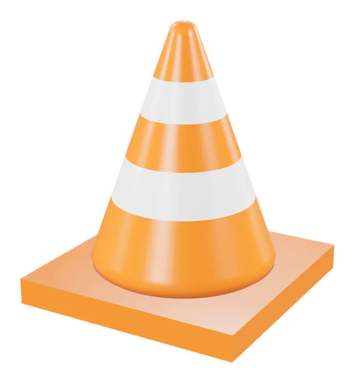

Marker AR
VLC cone on a cat marker
A VLC-style traffic cone that stands on a bordered cat meme marker, with the lecturer's original tinyhouse marker alongside it.
Open the cone labTEC611 coursework
Five projects, from a cyclops in a party hat to a cone on a cat marker
Every model here works three ways. Spin it in 3D, place it in your room on a supported phone, or point your camera at a printed marker and watch it appear.
See all projects
Drag to turn, pinch to zoom. Works on any phone or laptop.
Quick Look on iPhone, Scene Viewer on Android with ARCore.
Point the camera at a printed marker. No ARCore needed.
Newest first. Each model shows its true colours when you point at it.
Marker AR
A VLC-style traffic cone that stands on a bordered cat meme marker, with the lecturer's original tinyhouse marker alongside it.
Open the cone labModel optimisation
A corner sofa set with cushions, a blanket and coffee tables, ready to place in your room or on a marker.
Open the sofaLab 3
The edited two-storey tiny house with its repaired roof, roof supports and entrance stairs. Scan the QR sheet to open it, then track the marker.
Open the tiny houseLab 2, part B
Six exercises: a rotating marker box, a Blender solar panel, a heart sticker, a Blender GLB, an HTML solar structure and an interactive solar panel.
Open the Part B galleryLab 2, part A
My own three models: Cone Head Cyclops in a striped party hat, an armrest chair and a bookshelf.
Open the Part A galleryOne page for every model. Choose a model, allow the camera, then point it at a Hiro marker. Works without ARCore.
Open camera ARShow a marker on a second screen or print it. Keep the whole black border in view.
Scan the QR to open the tiny house on your phone, then point the camera at the Hiro marker on the same sheet.
Open the QR sheet